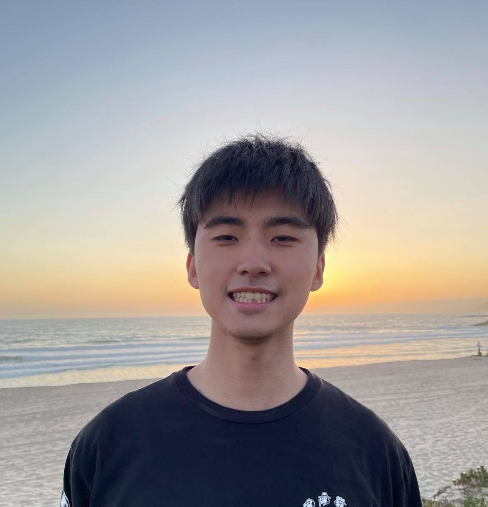

Kevin Choi
Computer engineering student aspiring to be a software engineer


About me
I am an incoming senior studying computer engineering at the University of Illinois at Urbana-Champaign (UIUC). I interned at a tech startup specializing in safety solutions last year and am excited to say I will be interning as a software engineering intern at Walmart eCommerce for this summer!
Check out some of the projects that I have worked on recently on my projects tab! Recently, I worked with three other classmates on a website that allows UIUC students to browse university courses, view pre and postrequisite courses, and plan out their future course schedule.
Some of my hobbies include playing League of Legends, playing tennis, and as of recent making coffee with a french press that I bought.